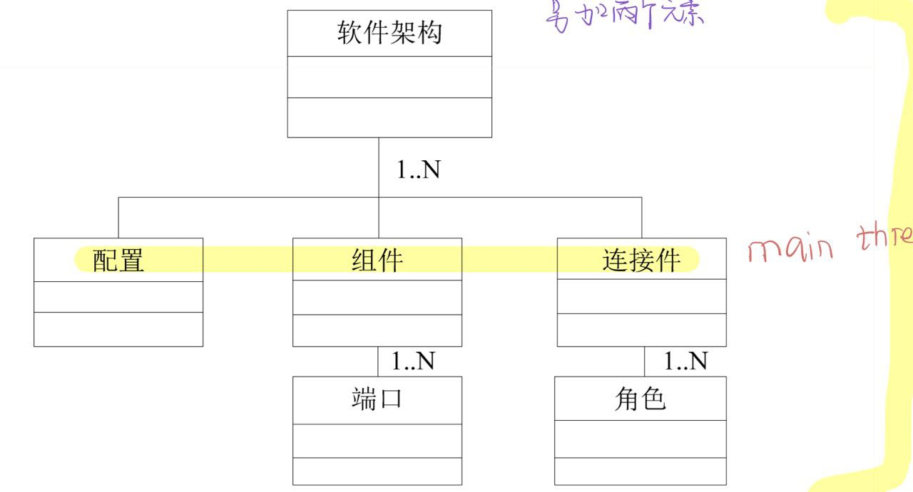
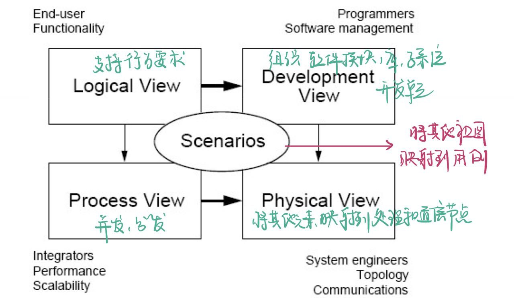
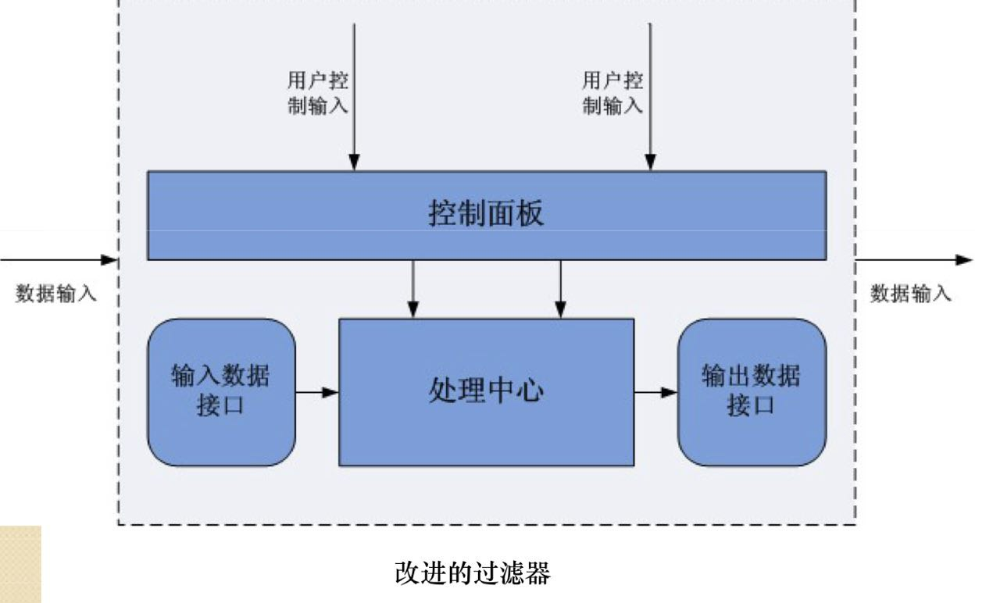
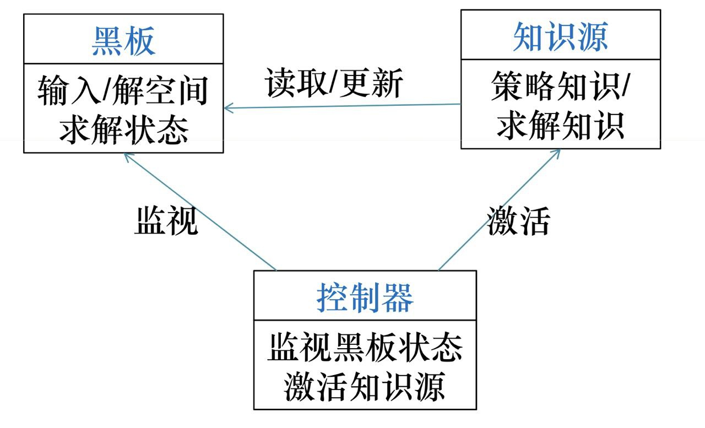
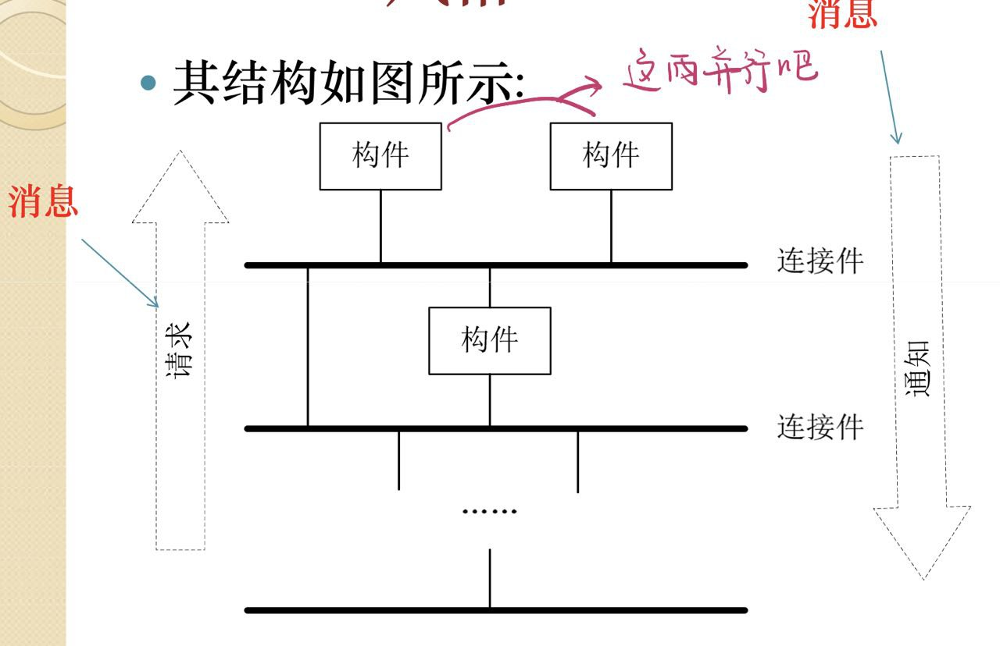
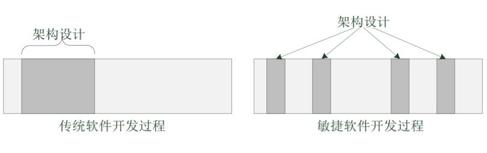
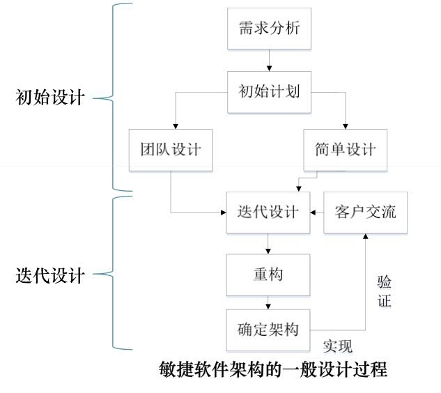
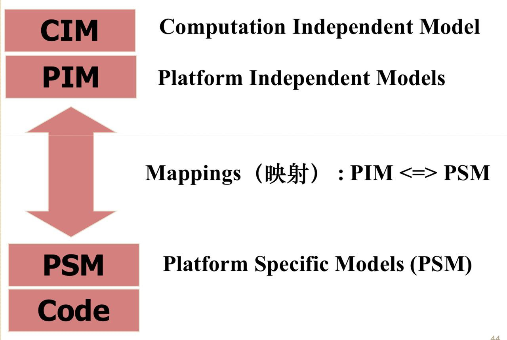
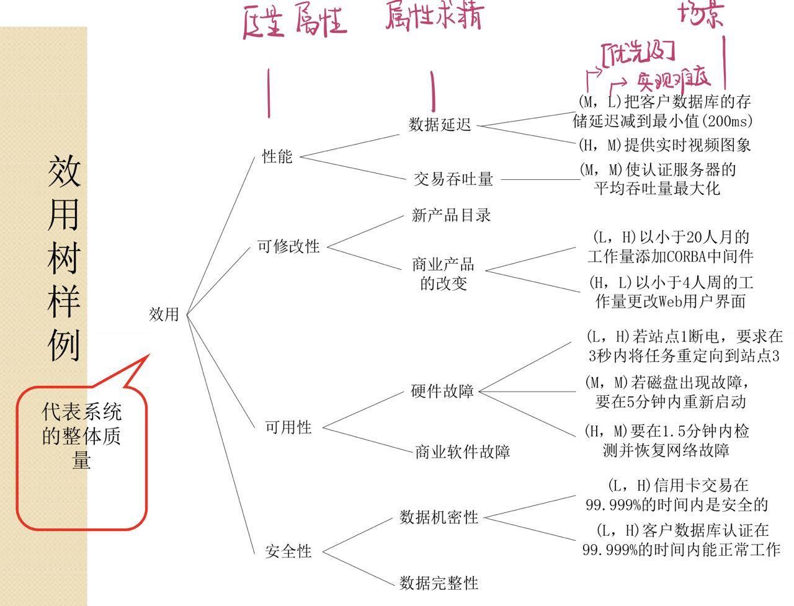

- 👨🦲尝试用一下午复习完一学期与乌龟，包包，平板，睡觉，以及一众大作业共存的软件体系结构课内容
- 👍 本文主要参考Run的笔记
软件体系结构核心复习预习
第二章 软件架构定义
组成派定义
组成派关注软件本身，将软件架构看作组件和交互的集合
- 1992 Dewayne Perry & Alexander Wolf 版本：软件架构={元素，组成，原理}
- 架构元素：处理元素，数据元素，连接元素
- 架构组成：由加权的属性和关系构成。属性约束架构元素选择，关系约束架构元素放置
- 架构原理：捕获选择架构风格，元素和形式的选择动机（什么牛马玩意）
- 1993 Mary Shaw & David Garlan 定义：软件架构包括组件，连接件和约束三大要素
- 组件：一串代码也可为独立程序
- 连接件：过程调用，管道和消息等，用于表示组件之间的相互关系
- 约束：组件连接时的条件
决策派定义
决策派关注软件架构中的实体（人）， 将软件架构视为一系列重要设计决策的集合
- 1999 Booch , Rumbaugh & Jacobson:软件架构是一系列重要决策的集合，这些决策关于
- 软件系统的组织
- 支持系统的结构元素和它们之间的接口，以及当这些元素相互协作时所体现的行为
- 如何组合这些元素，使他们逐渐合成为更大的子系统
- 架构风格
- 这些元素以及它们的接口，协作和组合
参考定义框架（一般性定义）
软件架构一般由以下五种元素构成：组件，连接件，配置，端口，角色

- 组件：具有某种功能的可重用的软件模块单元，表示了系统中主要的计算单元和数据存储
- 连接件：表示组件之间的交互
- 简单的连接件：管道，过程调用，事件广播 etc
- 复杂的：客户-服务器通信协议，数据库与应用的 SQL 连接等
- 配置：表示了组件和连接件的拓扑逻辑和约束
- 端口：组件与外部交互只能通过其接口，组件的接口由一组端口组成，每个端口表示组件与外部环境的交汇点 简单的端口：过程调用 复杂的：通信协议
- 角色：连接件的接口由一组角色组成，连接件的每个角色定义该连接件表示的交互的参与者。例子
- 二元连接件由两个角色
- RPC 角色：caller 和 callee
- pipe 角色：reading 和 writing
- 消息传递的角色：sender 和 receiver
- 事件广播有一个事件发布者以及任意多个事件接收者角色
- 二元连接件由两个角色
第三章 软件架构模型
软件架构建模的五类方法（及其优缺点）
-
基于非规范的图形表示的建模方法
- 正式图形表示：有严格定义的结构
- 树形结构
- 树地图
- 改进的树地图
- 冰块图
- 旭日图
- 双曲树
- 树形结构
- 非正式图形表示：不具有严格的标准。如盒线图，PowerPoint 风格图像？？？
- 问题：无法表示叶子节点间的关系
- 正式图形表示：有严格定义的结构
-
基于 UML 的建模方法
- 用 UML 建模的三种方法
- 将 UML 看作是一种软件架构描述语言直接对架构建模。
- 通过扩展机制约束 UML 的元模型以支持软件架构模型的需要。
- 对 UML 的元模型进行扩充。 | - | 架构元素 | UML 模型组件 | | :————: | :——————————–: | | 组件 | 分类器（如类、组件、节点、用例等） | | 接口 | 接口 | | 关系（连接器） | 关系（如泛化、关联、依赖等） | | 约束（规则） | 规则 |
- 问题：只是针对特定的面向对象的架构，比如对架构缺少形式化的支持
- 对架构的构造性不强
- 虽使用交互图，状态图和活动图描述系统行为，但语义精确性不足
- UML 多视图建模产生信息冗余和不一致
- 对架构的建模只能到达非形式化的层次，不能保证软件开发过程的可靠性，不能充分体系架构的本质
- 用 UML 建模的三种方法
-
基于形式化的建模方法（考到就认了）
- Z 语言
- 过滤器模式
- Petri 网
- B 语言
- VDM
- CSP：基于进程代数的描述语言,基于进程之间的关系描述，来描述一个复杂并发系统的动态交互行为特性
-
基于 UML 形式化的方法
-
其他建模方法（文本语言，MDA）
“4+1"模型

- 用例视图（场景）：用例图，描述和概述图。从外部世界角度来描述正在建模的系统的功能；所有其他视图都依靠用例视图指导.
- 逻辑视图：类图，对象图，状态图和协作图。描述系统各部分的抽象描述.
- 过程视图：活动图，顺序图。描述系统中的进程.
- 开发视图：包图和组件图。描述各部分如何被组织为模块和组件.
- 物理视图：部署图。描述前三个视图中所述的系统设计实现为一族现实时间的实体.
第四章 软件架构风格（堪称半本书）
软件架构风格是什么
软件架构风格又称软件架构惯用模式，是描述某一特定应用领域中系统组织方式的惯用模式，作为“可复用的组织模式和习语”，为设计人员的交流提供了公共的术语空间，促进了设计复用与代码复用
使用架构风格的好处
- 可以极大的促进设计的重用性和代码的重用性，并且使得系统的组织结构易被理解。
- 使用标准的架构风格可较好地支持系统内部的互操作性以及针对特定风格的分析。
20 种体系结构风格的特点（组件，连接件，约束），优点，缺点，适用范围
1 管道过滤器风格
-
基本组件：过滤器（功能模块）
- 每个过滤器组件中都封装了一个处理步骤
- 数据源点和数据终点可以看作是特殊的过滤器
-
连接件：管道（数据流）
-
过滤器 Filter
- 作用：将源数据变换为目标数据
- 变换方式：（丰富）增加、（精炼）删除、（转换）改变、分解、合并等
- 特性：独立性
-
- 过滤器独立完成自身功能，相互之间无需进行状态交互
-
- 过滤器自身无状态
-
- 过滤器对其上下游的过滤器“无知”
-
-
管道 Pipe
- 作用：将数据从一个过滤器的输出口转移到另一个过滤器的输入口
- 过滤器是单向移动的。
- 过滤器可以有缓冲区。
-
结果的正确性不依赖于各个过滤器运行的先后顺序（完整的计算过程包含在过滤器之间的拓扑结构）
-
优点
-
- 由于每个组件行为不受其他组件的影响，整个系统的行为易于理解,使软件组件具有良好的隐蔽性，高内聚低耦合。
-
- 管道-过滤器风格支持功能模块的复用。
-
- 具有较强的可维护性和可拓展性
-
- 支持一些特定的分析，如吞吐量计算和死锁检测等。
-
- 具有并发性。
-
-
缺点
-
- 往往导致系统处理过程的成批操作。
-
- 由于数据传输往往需要特定的出来，导致过滤器需要对数据流进行解析和反解析，增加了过滤器具体实现的复杂性，系统性能不高。
-
- 交互式处理能力弱。
-
-
改进
- 加一个控制面板与用户交互
- 加一个数据处理中心来做数据流的解析反解析，降低复杂度，提高性能

-
应用场景：数据源源不断的产生，系统需要对这些数据进行若干处理。
2 主程序/子程序风格
- 组件
- 程序和明确可见的数据
- 程序=数据结构+算法
- 连接件：程序调用和数据共享
- 约束：单线程
- 优点
-
- 结构化程序设计的典型风格，相对于非结构化设计逻辑清晰，易理解。
-
- 开发过程采用逐步细化，将大系统分解为若干模块。(模块化)
-
- 缺点
-
- 对数据存储格式的变化将会影响几乎所有的模块。
-
- 在规模变大时将会难理解,难测试，难维护。（为什么呢，都模块化了还要怎样，哪个系统大了不变得难理解难测试难维护）
-
- 难以支持有效的复用。
-
- 应用场景：它适用于可以通过过程定义的层次结构适当地定义计算的应用程序。
3 面向对象风格
- 特点
-
- 对象负责维护其表示的完整性(通常是通过保持其表示的一些不变式来实现的)
-
- 对象的表示对其他对象而言是隐蔽的。抽象数据类型的使用，以及面向对象系统的使用已经非常普遍。
-
- 应用场景：它适用于中心问题是识别和保护相关信息体（尤其是表示信息）的应用程序
- 组件：管理器（例如，servers、对象、抽象数据类型）
- 连接件：程序调用
- 约束：分散的,去中心化的，通常是单线程
- 优点
-
- 对象隐藏了其实现细节，使得对象的使用变得简单方便，而且具有很高的安全性和可靠性。
-
- 设计者可将一些数据存取操作的问题分解成一些交互的代理程序的集合。
-
- 缺点
-
- 管理多个对象
-
- 管理许多交互
-
- 行为的分布式责任
-
- 捕获相关设计的族
-
4 层次化风格
- 大多数分层架构的四个标准层
- 表现层
- 业务层
- 持久层（有时会和业务层结合在一起成为一个单独的业务层）
- 数据库层
- 特点
-
- 每层为上一层提供服务，使用下一层的服务，只能见到与自己邻接的层。
-
- 大的问题分解为若干渐进的小问题，逐步解决，隐藏了很多复杂度。
-
- 修改一层，最多影响两层，而通常只能影响上层。接口稳固，见谁都不影响。
-
- 上层必须知道下层的身份，不能调整层次之间的顺序。
-
- 应用场景：它适用于涉及可以分层排列的不同服务类的应用程序。
- 组件：几个水平层，每层在应用中执行特定角色。通常是复合的，例如程序的集合。
- 连接件：取决于组件的结构；通常是在受限的可见性下进行的过程调用
- 约束：单线程
- 优点
-
- 支持基于可增加抽象层的设计，允许将一个复杂问题分解成一个增量步骤序列的实现。
-
- 支持扩展【维护、修改比较容易】
-
- 支持重用【接口稳定】
-
- 缺点
-
- 不是所有系统都容易用这种模式来构建；
-
- 定义一个合适的抽象层次可能会非常困难，特别是对于标准化的层次模型。
-
- 层层相调，影响性能。
-
5 事件驱动风格
-
特点：事件的触发者并不知道哪些构件会被这些事件影响，相互保持独立。
- 不能假定构件的处理顺序
- 各个构件之间彼此无之间的连接关系
-
事件调度策略
- 有独立的事件分派模块
- 全广播,派遣模块将事件广播到所有模块，但只有感兴趣的才去取事件并触发自身的行为
- 选择性广播：把事件送到那些已经注册了的模块
- 点对点广播：基于队列
- 发布-订阅模型：比如 RSS
- 无独立的事件分派模块（被观察者/观察者）
- 每个模块都允许其他模块向自己所能发送的某些消息表明兴趣
- 当某个模块发出某一事件时，它自动将这些事件发布给那些曾经向自己注册过此事件的模块
- 有独立的事件分派模块
-
优点
-
- 组件之间关联较弱，一个组件出错将不会影响其他构件。
-
- 提高软件的复用能力。只要在系统事件中注册组件的过程，就可以将该组件集成到系统中。
-
- 系统便于升级。只要组件名和事件中注册的过程名保持不变，原有组件就可以被新组件替代。
-
-
缺点
-
- 组件放弃了对计算机的控制权，完全由系统决定。
-
- 存在数据交换问题。
-
- 该风格中，正确性验证成为一个问题。
-
6 解释器风格
- 优点
-
- 有利于实现程序的可移植性和语言的跨平台能力。
-
- 可以对未来的硬件进行模拟和仿真，降低测试所带来的复杂性和昂贵花费。
-
- 缺点
-
- 额外的间接层次导致了系统性能的下降。
-
7 基于规则的系统风格（考到我认🖕)
- 优点
-
- 降低了修改业务逻辑的成本。
-
- 缩短了开发时间。
-
- 将规则外部化，可在多个应用之间共享。
-
- 对规则的改变将会非常迅速并且具有较低的风险。
-
- 缺点
-
- 额外的间接层次导致了系统性能的下降。
-
8 仓库风格
-
组件
- 中心数据结构组件，表示当前数据的状态。
- 相对独立的组件集合，各个功能模块（子系统）等。
-
连接件：数据仓库与独立组件之间的交互
- 由输入流中事务触发系统相应的进程执行$\rightarrow$数据库型知识库。
- 由中心数据结构的当前状态触发系统相应的进程执行$\rightarrow$黑板知识库。
- 应用场景：应用于核心问题是建立、扩充和维护一个复杂的中央信息体的情况。
- 数据处理，主要需要用传统的数据库来搭建业务决策系统。
- 软件开发环境，主要需要表示和操作相关的程序和设计。
- 优点
-
- 便于模块间的数据共享。
-
- 方便模块的添加、更新和删除。
-
- 避免了知识源的不必要的重复存储等。
-
- 缺点
-
- 对于各个模块，需要一定的同步/加锁机制保证数据结构的完整性和一致性等。
-
9 黑板系统风格
- 组成部分
- 知识源：由条件和动作组成。条件满足，知识源被触发，其动作部分增加或修改黑板上的内容
- 黑板数据结构(各种知识源之间的通讯和交互只通过黑板进行)
- 控制器：时刻监视黑板状态变化

- 优点
-
- 便于多客户共享大量数据。
-
- 即便于添加新的作为知识源代理的应用程序，也便于扩展共享的黑板数据结构。
-
- 知识源可重用。
-
- 支持容错性和健壮性。
-
- 缺点
-
- 不同的知识源代理对于共享数据结构要达成一致，这也造成了对黑板数据结构的修改较为困难—要考虑到各个代理的调用。
-
- 需要一定的同步/加锁机制保证数据结构的完整性和一致性，增大了系统复杂度。
-
10 C2 风格（属于层次体系架构风格）
可以概括为通过连接件绑定在一起的按照一组规则运作的并行组件网络。该规则规定了所有组件之间的交互必须通过异步消息机制来实现

- 连接件：负责把构件绑定在一起，其上可连任意数目的构件和连接件；主要指责：
- 消息的路由
- 消息的过滤
- 特点
- 组件和连接件的顶部与底部互相连接
- C2 构件内部，通信和处理是分开的
- 优点
-
- 可使用任何编程语言开发组件，组件重用和替换易实现。
-
- 组件相互独立，依赖较小，具有一定的扩展能力，可支持不同粒度的组件。
-
- 组件不需要共享地址空间。
-
- 可实现多个用户和多个系统之间的交互。
-
- 可使用多个工具集和多媒体类型，动态更新系统框架结构。
-
- 缺点
-
- 不太适合大规模流式风格系统
-
- 对数据库使用比较频繁的使用。
-
- 应用场景
- 由于其基于组件和消息的架构风格，很适合用于 GUI 软件开发，构建灵活和可扩展的应用系统
11 C/S 风格
12 B/S 风格
13 平台/插件风格
- 优点
-
- 降低系统各模块之间的互依赖性。
-
- 系统模块独立开发、部署、维护。
-
- 根据需求动态的组装、分离系统。
-
- 缺点
-
- 插件是别人开发的可以用到某主程序中的，只服务于该主程序，可重用性差。
-
14 面向 Agent 风格
- 优点
-
- 面向 Agent 的软件工程方法对于解决复杂问题是一种好的技术，特别是对于分布开放异构的软件环境。
-
- 缺点
-
- 大多数结构中 Agent 自身缺乏社会性结构描述和与环境的交互。
-
15 面向方面软件架构风格
- 优缺点分析
-
- 可以定义交叉的关系，并将这些关系应用于跨模块的、彼此不同的对象模型。
-
- AOP 同时还可以让我们层次化功能性而不是嵌入功能性，从而使代码由更好的可读性和易维护性。
-
- 它会和面向对象编程可以很好地合作，互补。
-
16 面向服务架构风格
- 优点
-
- 灵活性，根据需求变化，重新编排服务。
-
- 对 IT 资产的复用。
-
- 使企业的信息化建设真正以业务为核心。业务人员根据需求编排服务，而不必考虑技术细节。
-
- 缺点
-
- 服务的划分很困难。
-
- 服务的编排是否得当。
-
- 如果选择的接口标准有问题，会带来系统额外开销和不稳定性。
-
- 对 IT 硬件资产还谈不上复用。
-
- 主流实现方式接口很多，很难统一。
-
- 主流实现方式只局限于不带界面的服务的共享。
-
17 正交架构风格
-
特点
-
- 由完成不同功能的 n（n>1）个线索（子系统）组成。
-
- 系统具有 m（m>1）个不同抽象级别的层。
-
- 线索之间是相互独立（正交）的。
-
- 系统有一个公共驱动层（一般为最高层）和公共数据结构（一般为最底层）。
-
-
优点
-
- 结构清晰，易于理解。
-
- 易修改，可维护性强。
-
- 可移植性强，重用粒度大。
-
-
缺点
-
- 在实际应用中，并不是所有软件系统都能完全正交化，或者有时完全正交化的成本太高。因此，在进行应用项目的软件架构设计是，必须反复权衡进一步正交化的额外开销与所得到的更好的性能之间的关系。
-
19 基于层次消息总线的架构风格
20 模型-视图-控制器风格
第六章 软件架构与敏捷开发
敏捷开发的基本理念
- 强调个体和互动比强调过程和工具更好。
- 强调获得可运行的软件比强调完成详尽的文档好。
- 强调与客户合作比强调进行详细的合同谈判好。
- 强调响应变化比强调遵循既定的计划好。
敏捷开发与架构设计的关系
- 软件架构与敏捷开发的出发点是一致的。
- 软件架构与敏捷开发都是一个权衡的过程：软件架构设计需要权衡涉众们的各种需求，在众多的解决方案中确定唯一的架构设计；敏捷开发是在软件开发过程混沌和大量开发管理活动加入的两个极端中做出的一种权衡。
- 软件架构与敏捷开发目的都是为了提高软件开发效率、提高软件质量、降低软件成本，将开发团队的价值最大化。
- 敏捷开发也需要重视软件架构。
- 软件架构设计对于敏捷开发来说也是必要的。两者在软件开发实践中能够共同存在，且互相促进。
- 敏捷开发改变了软件架构的设计方式。
- 重视架构设计，但轻详细设计
- 敏捷思想中将传统的架构设计分成：种子架构设计+详细架构设计
- 种子架构设计注重软件系统骨架；内容包括：软件的架构层次，重要模块，重要类的说明等
- 详细架构设计转移到编码阶段、重构阶段、单元测试阶段等。

敏捷开发中如何改变了软件架构的设计方式
- 敏捷开发把传统软件开发前期的详细架构设计，分散到了整个敏捷开发软件过程中，以达到提高效率、减少风险的目的。
- 敏捷开发的思想在软件架构设计中最主要的体现就是团队设计和简单设计这两种设计理念。

- 需求分析： 敏捷开发中的需求分析引入了架构设计的理念，分为初始阶段需求分析和迭代阶段需求分析。
- 初始设计：初始设计需要对软件系统的设计进行全局抽象层次上的考虑。包括系统的基本处理流程、系统的组织结构、模块划分、功能分配等
- 迭代过程：迭代设计、重构、确定架构、客户交流
第八章 软件架构设计与实现
成功的软件架构应具有的品质
- 良好的模块化。
- 适应功能需求的变化，适应技术的变化 。
- 对系统的动态运行有良好的规划
- 对数据的良好规划。
- 明确、灵活的部署规划。
基于体系结构的软件设计方法
基于体系结构的软件设计（ architecture-based software design, ABSD）方法为软件系统的概念体系结构提供构造方法，概念体系结构描述了系统的主要设计元素及其关系。概念体系结构代表了在开发过程中做出的第一个选择，它是达到系统质量和业务目标的关键，为达到预定功能提供了基础。
ABSD 方法三基础
- 功能分解：ABSD 方法使用已有的基于模块的内聚和耦合技术；
- 通过选择体系结构风格来实现质量和业务需求。
- 软件模板的使用：利用一些软件系统的结构。
ABSD 方法的输入
- 抽象功能需求
- 用例
- 抽象的质量和商业需求
- 质量因素
- 体系结构选项
- 约束
ABSD 方法的步骤
开局一个关键词，内容全靠编
- 功能分解：分解的目的是使每个组在体系结构内代表独立的元素。
- 选择体系结构风格
- 为风格分配功能
- 细化模板
- 功能校验
- 创建并发视图
- 创建配置视图
- 验证质量场景
- 验证约束
将软件架构的概念和原则引入软件需求阶段有什么好处？不引入可能会引起什么问题？
- 若把架构概念引入需求分析阶段，有助于保证需求规约、系统设计之间的可追踪性和一致性，有效保持软件质量。
- 将软件架构概念和原则引入需求分析，也可以让我们获得更有结构性和可重用的需求规约。
- 用传统的方法产生需求规约，不考虑软件架构概念和原则，则在软件架构设计阶段建立需求规约与架构的映射将相对困难。
软件架构和软件需求是如何协同演化的？
- 软件需求和软件架构两者是相辅相成的关系，一方面软件需求影响软件架构设计，另一方面软件架构帮助需求分析的明确和细化。
- 需求与架构的互相影响可以看作一个螺旋的过程，也是一个双峰的过程。在一个反复的过程中，产生更详细的需求规约和设计规约，最终把交织在软件开发过程中的设计规约和需求规约分离开来。
将软件架构映射到详细设计经常遇到什么问题?如何解决？
- 问题
- 缺失重要架构视图，片面强调功能需求。
- 不够深入，架构设计方案过于笼统，基本还停留在概念性架构的层面，没有提供明确的技术蓝图。
- 名不副实的分层架构，缺失层次之间的交互接口和交互机制，只进行职责划分。
- 在某些方面过度设计。
- 解决方法
- 对于缺失重要架构视图问题，可以针对遗漏的架构视图进行设计。
- 对于不够深入问题，需要将设计决策细化到和技术相关的层面。
- 对于名不副实的分层架构问题，需要步步深入，明确各层之间的交互接口和交互机制。
- 虽然我们必须考虑到系统的扩展性，可维护性等，但切忌过度设计。
MDA 的基本思想，过程，应用 MDA 的好处
MAD——model driven architecture，基于模型驱动软件架构。
- 基本思想：将软件系统分成模型和实现两部分：模型是对系统的描述，实现是利用特定技术在特定平台或环境中对模型的解释。模型仅仅负责对系统的描述，与实现技术无关。这是模型的实现技术无关性。
- 过程
- 用计算无关模型(Computer Independent Model) 捕获需求；
- 创建平台无关模型(Platfor Independent Model)；
- 将 PIM 转化成为一个或多个平台特定模型 ( PSM )，并加入平台特定的规则和代码；
- 将 PSM 转化为代码等。
- 好处: 将模型与实现分离后，能够很好的适应技术易变性。由于实现往往高度依赖特定技术和特定平台，当技术发生迁移时，只需针对这种技术作相应的实现，编写相应的运行平台或变换工具。所以，能够比较好的应对实现技术发展带来的挑战。
MDA 的映射方法中的三类模型
- 计算无关模型(CIM): 也称业务模型，描述系统外部行为和运行环境
- 平台无关模型(PIM): 具有高抽象层次，无关于任何实现技术的模型
- 平台特定模型(PSM): 为某种特定实现技术量身定做，让你用这种技术中可用的实现构造来买描述系统的模型。PIM 会被变换成一个或多个 PSM

第十五章 软件体系结构评估
ATAM-Architecture Tradeoff Analysis Method
质量属性，质量场景
- 质量属性
- 可修改性
- 可用性
- 性能
- 可测试性
- 易用性
- 安全性
- 质量场景
- 为精确得出具体的质量目标，并以之作为判定该体系结构优劣的标准。我们把为得出这些目标而采用的机制叫做场景
- 场景是风险承担者的角度对系统的交互的简短描述
- 在体系结构评估中，一般采用刺激，环境和响应三方面来对场景进行描述
概念
- 敏感点: 敏感点是一个或者多个构件的特征；影响一个质量属性；可以使设计师搞清楚实现质量目标时应该注意什么。
- 权衡点: 权衡点是影响多个质量属性的特征；是多个质量属性的敏感点；权衡点需要进行权衡。
- 质量效用树: 效用树为我们提供了一种直接而有效地将系统的业务驱动因素转换为具体的质量属性场景的机制，该步骤的输出结果是对具体质量属性需求（以场景形式实现）的优先级的确定。
- 风险承担者、涉众、牵涉到的人: 体系结构设计师、开发人员、维护人员、集成人员、测试人员、标准专家、性能工程师
ATAM 评估步骤
ATAM 主要部分包括 4 组，共 9 个步骤。
- 陈述，包括通过它进行的信息交流
- ATAM 方法的陈述：评估负责人
- 商业动机的陈述：项目经理或系统客户
- SA 的陈述：系统设计人员
- 调查与分析，包括对照体系结构方法评估关键质量属性需求
- 确定体系结构方法：系统设计人员
- 生成质量效用树
- 分析体系结构方法：基于质量效用树中的高优先级场景，说明和分析这些场景的体系结构方法（识别风险，非风险，敏感点，权衡点）
- 测试，包括对照所有相关人员的需求检验最新结果
- 集体讨论并确定场景优先级
- 分析体系结构方法
- 形成报告，包括陈述 ATAM 的结果
- 结果的表述
质量效用树的构建
- 效用树中质量属性细化为场景
- 确定最重要的质量属性目标，并设置优先级
- 效用树设置优先级标准

优缺点
- 优点
- 考虑了所有与系统相关的人员对质量的要求。
- 涉及到的基本活动包括确定应用领域的功能和软件体系结构之间的映射，设计用于体现待评估质量属性的场景以及分析软件体系结构对场景的支持程度。
- 缺点
- 基于场景的评估方式是特定领域的，对一个领域适合的场景设计在另一领域未必适合。
- 实施者一方面需要有丰富的领域知识以对某质量需求设计出合理的场景，另一方面，必须对待评估的软件体系结构有一定的了解以判断是否支持场景描述的一系列活动。
第十章 软件架构相关课题
软件架构演化与维护
- 软件架构的生命周期：初始设计，实际使用，修改完善（软件架构的演化与维护过程），退化弃用
- 软件架构演化的目的就是为了维护软件架构自身的有用性
- 软件架构的演化需要考虑具体的软件架构定义
- 对于软件架构={组件，连接件，约束}；则要关注的为组件，连接件和约束的添加，修改与删除
- 对于面向对象软件架构,结合 UML 顺序图，利用层次自动机给出演化操作的具体演化规则：
- 对象演化
- 消息演化
- 复合片段演化
- 约束演化
- 针对软件架构的演化过程是否处于系统运行时期，可以将软件架构演化分为静态演化和动态演化。
- 静态演化：发生在软件架构设计、实现和维护过程中，软件系统还未运行或者处于运行停止状态。
- 动态演化：发生在软件系统运行过程中。
Warning这一块 ppt 上挺多的，在第十章 ppt,注意一手,静态演化和动态演化
架构腐蚀
- 定义
- 软件架构腐蚀（software architecture erosion）是指预期软件架构或概念软件架构与实际软件架构之间的偏离。
- 它意味着最终的实现并没有完全满足预定的计划或违背了系统的约束和规则。这种偏离更多的是源自日常的软件修改，而非人为的恶意。
- 架构腐蚀会导致软件演化过程中出现工程质量的恶化。
- 预防方法
- 腐蚀最小化
- 腐蚀预防
- 腐蚀修补
架构技术债
- 定义
- 技术债是指开发人员为了加速软件开发，或是由于自身经验的缺乏，有意或无意的在应该采用最佳方案的时候进行了妥协，使用了短时期能加速软件开发的方案，从而在未来给自己带来额外的开发负担。最终会带来"技术破产”
- 分类
- 代码债
- 静态分析工具的违规行为
- 不一致的编码风格
- 设计债
- 设计臭味
- 违背设计原则的行为
- 测试债
- 测试缺乏
- 测试覆盖面不充分
- 不恰当的测试设计
- 文档债
- 缺少重要技术文档
- 较差的文档
- 未及时修改更新的文档
- 代码债
- 产生技术债的一些根本原因
- 进度压力
- 软件设计师缺乏足够的经验和技巧
- 不注重设计原则的应用
- 缺乏对设计坏味和重构的意识
- 开发中有意采用非最优的选择
架构坏味道
- 代码坏味道
- 如果程序中某一段代码是不稳定的或者有一些潜在的问题，那么该段代码往往会包含一些明显的不太好的痕迹。我们称这些痕迹为代码坏味道。架构坏味道定义和代码坏味道类似，只是架构坏味道在系统粒度下出现的层次要高于代码坏味道。
- 方法级的代码坏味道：过长方法；参数太多；超长标识符；超短标识符；数据过量返回；超长代码行etc
- 架构坏味道
- 是一种通常使用的，可以对系统生命周期特性产生消极影响的架构设计。它可能是由于在不适当的环境下应用了一个不适合的解决方案或者在错误的粒度层次下应用了某个设计抽象等产生的，会对系统的可理解性、可测试性、可扩展性以及可重用性等产生负面影响。
- 典型的架构坏味道：连接件嫉妒、过度分散的功能、模糊接口、无关的相邻连接件、砖关注过载、砖使用过载、砖循环依赖、未使用接口、重复的组件功能、组件嫉妒、连接件链。
架构脆弱性
- 软件（系统）架构设计存在一些明显的或者隐含的缺陷，攻击者可以利用这些缺陷攻击系统，或者当受到某个或某些外部刺激时，系统发生性能下降、稳定性下降、可靠性下降、安全性下降等等。如果软件架构具备这类缺陷，我们认为该软件架构是脆弱的，也就是软件架构脆弱性。
- 软件架构脆弱性通常与软件架构的风格和模式有关，不同风格和模式的软件架构，脆弱性体现和特点有很大不同。